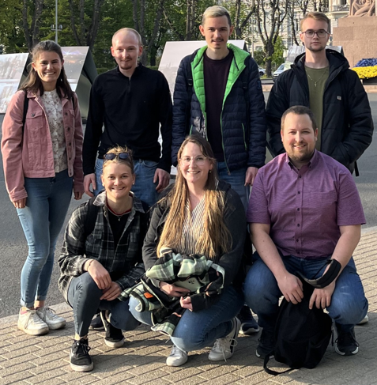

My Internship in Riga, Latvia
Published on: August 10, 2024
By chance, I came across the Erasmus program for people in vocational training (known as "Duale Ausbildung" in Germany) and was immediately excited. I wanted to apply right away, and fortunately, my company supported this decision and even covered my personal contribution.
The program offered a range of countries to choose from, and I picked Latvia on a whim. It was more of a gut feeling, which, fortunately, I followed.
The organization go.for.europe took care of everything, from finding a company in Latvia to securing an apartment.
They also arranged transportation from the airport to the apartments.
My group consisted of seven participants, whom I had already met during a preparatory workshop. There, we were given an overview of the general process of the program and received some information about Latvian culture. This was definitely very useful.
My journey to Riga went smoothly, although I was quite exhausted. I had to take the ICE from Stuttgart to Frankfurt at 6 a.m. In Frankfurt, I met my group, and we flew to Riga together. Upon our arrival, a driver was already waiting to take us to the hotel. My room was beautiful and quite spacious. The bathroom was also nicely designed, and the kitchen had an induction stove, which was a completely new (and better) experience for me.
I completed my internship at a small and fast-growing IT company that offers a global lifetime flat for IoT devices in the form of a SIM card, which provides fast, secure, and reliable connections and data analytics in over 150 countries worldwide. The company now manages more than 15,000,000 SIM cards. I worked in the internal IT department and had a wide range of tasks. Mainly, I dealt with Azure Active Directory and worked on exciting projects like the implementation of LAPS, a solution for securely managing local administrator accounts in Windows. I also handled the daily tickets that came in. I enjoyed my tasks, the work atmosphere, and the working style of the company very much.
I also got along well with my colleagues, who were very satisfied with my work.
In my free time, I explored many sights and had various experiences with my group. We visited different museums, enjoyed the beach, and explored the beautiful old town. I had to take the tram to work every day for about 40 minutes, during which I also had many experiences, saw a lot, and met some nice people. By the way, the weather was surprisingly good, with constant temperatures between 20 and 25 °C. So, packing my winter clothes turned out to be completely unnecessary.
My personal conclusion:
It was a wonderful time that I will always remember. Latvia is a great country with a beautiful culture, landscape, and friendly people. My internship abroad not only helped me professionally and linguistically but also enabled me to grow tremendously on a personal level. For this reason, I can wholeheartedly recommend it to anyone interested.
Comments